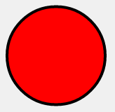
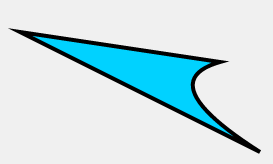
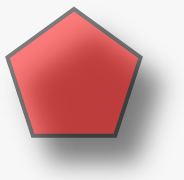

How does it work?
Every thing starts from Kinetic.Stage than contains several user’s layers (Kinetic.Layer).
Each layer has two <canvas> renderers: a scene renderer and a hit graph renderer.
The scene renderer is what you can see, and the hit graph renderer is a special hidden
canvas that’s used for high performance event detection.
Each layer can contain shapes, groups of shapes, or groups of other groups.
The stage, layers, groups, and shapes are virtual nodes, similar to DOM nodes in an HTML page.
Here’s an example Node hierarchy:
Stage
|
+------+------+
| |
Layer Layer
| |
+-----+-----+ Shape
| |
Group Group
| |
+ +---+---+
| | |
Shape Group Shape
|
+
|
Shape
All nodes can be styled and transformed. Although Kinetic has prebuilt shapes available,
such as rectangles, circles, images, sprites, text, lines, polygons, regular polygons, paths, stars, etc.,
you can also create custom shapes by instantiating the Shape class and creating a draw function.
Once you have a stage set up with layers and shapes,
you can bind event listeners, transform nodes, run animations,
apply filters, and much more.
Minimal code example:
// first we need to create a stage
var stage = new Kinetic.Stage({
container: 'container', // id of container
width: 500,
height: 500
});
// then create layer
var layer = new Kinetic.Layer();
// create our shape
var circle = new Kinetic.Circle({
x: stage.getWidth() / 2,
y: stage.getHeight() / 2,
radius: 70,
fill: 'red',
stroke: 'black',
strokeWidth: 4
});
// add the shape to the layer
layer.add(circle);
// add the layer to the stage
stage.add(layer);
Result:

Basic shapes
Kinetic.js supports shapes: Rect, Circle, Ellipse, Line
Image, Text, TextPath, Star, Label, SVG Path, RegularPolygon.
Also you can create custom shape:
var triangle = new Kinetic.Shape({
sceneFunc: function(context) {
context.beginPath();
context.moveTo(20, 50);
context.lineTo(220, 80);
context.quadraticCurveTo(150, 100, 260, 170);
context.closePath();
// special Kinetic.js method
context.fillStrokeShape(this);
},
fill: '#00D2FF',
stroke: 'black',
strokeWidth: 4
});

Styles
Each shape supports the following style properties:
- Fill. Solid color, gradients or images
- Stroke (color, width)
- Shadow (color, offset, opacity, blur)
- Opacity
var pentagon = new Kinetic.RegularPolygon({
x: stage.getWidth() / 2,
y: stage.getHeight() / 2,
sides: 5,
radius: 70,
fill: 'red',
stroke: 'black',
strokeWidth: 4,
shadowOffsetX : 20,
shadowOffsetY : 25,
shadowBlur : 40,
opacity : 0.5
});

Events
With Kinetic you can easily listen to user input events (click, dblclick, mouseover, tap, dbltap, touchstart etc),
attributes change events (scaleXChange, fillChange) and drag&drop events (dragstart, dragmove, dragend).
circle.on('mouseout touchend', function() {
console.log('user input');
});
circle.on('xChange', function() {
console.log('position change');
});
circle.on('dragend', function() {
console.log('drag stopped');
});
DRAG AND DROP
Kinetic has builtin drag support. For the current moment there is no drop events (drop, dragenter, dragleave, dragover)
but it is very easy to implement them via framework.
To enable drag&drop just set property draggable = true.
shape.draggable('true');
Then you can subscribe to drag&drop events and setup moving limits.
More documentation: